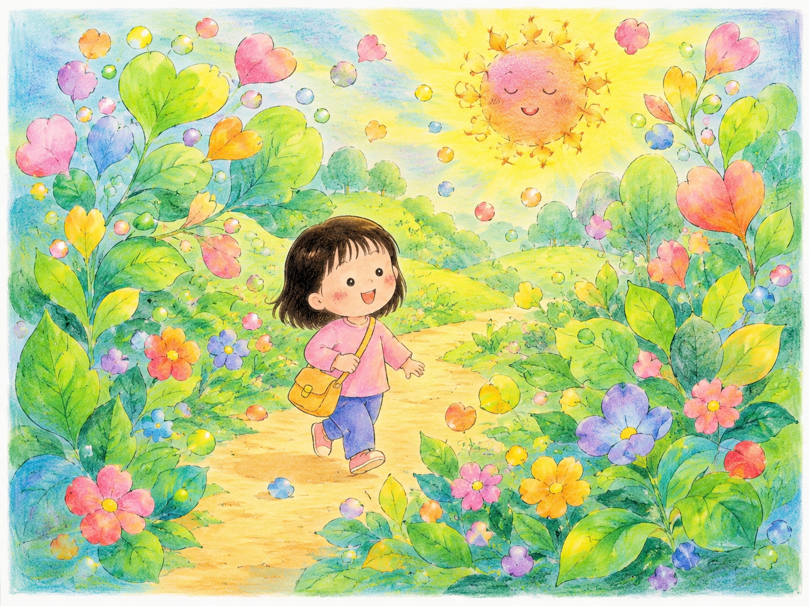
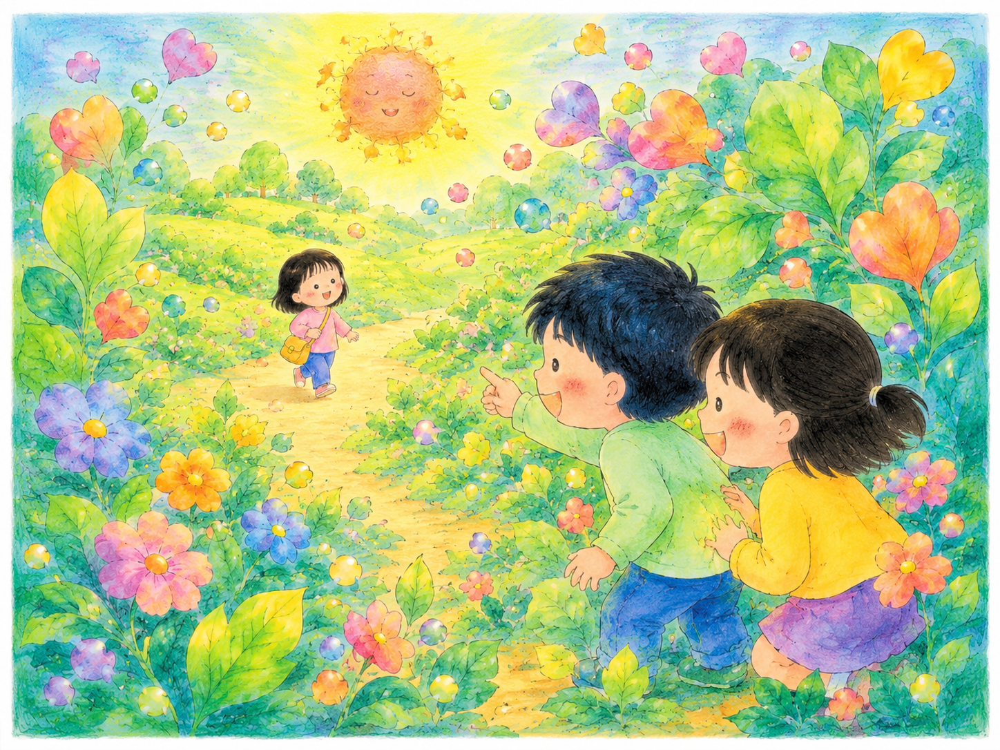

01

はじまり
きょうは どこまで
いけるかな。
How far can I go today?
0㎝の美術館
Story Room
01

きょうは どこまで
いけるかな。
How far can I go today?
02
さっきまでの みちが、
どこかへ いってしまった。
The path I knew seemed to disappear.
03
ひとりかな、って
おもった。
I wondered if I was all alone.
04

でも、
きみに きづいた子が いた。
But someone noticed you.
05
たいようも そっと、
こっちだよって ひかっていた。
And the sun softly shone, as if saying, “This way.”
06
もう ひとりじゃない。
みつけてもらえるって、あたたかい。
I’m not alone anymore. Being found feels warm.
1 / 6